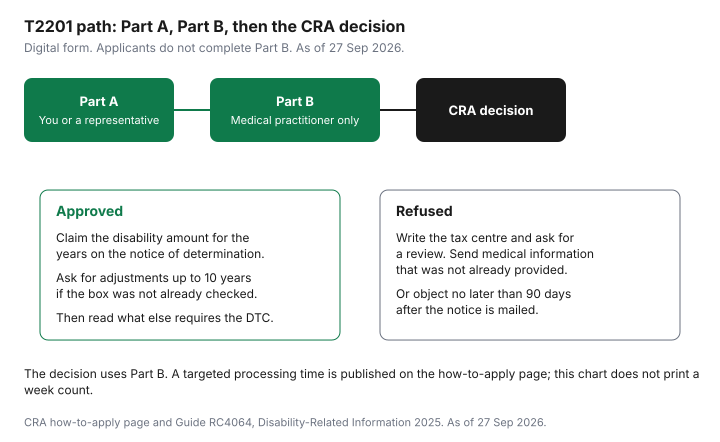

Healthcare · Canada
The Disability Tax Credit in Canada: Eligibility, Form T2201, and the Programs It Unlocks
The disability tax credit is a non-refundable credit. It reduces federal tax for a person with a severe and prolonged impairment, or for a supporting family member who can use an amount the person does not need. It is not the same test as a workplace long-term disability claim, and it is not automatic because a diagnosis exists. Guide RC4064, Disability-Related Information 2025, and the CRA's eligibility and how-to-apply pages are the sources below. This is education, not tax advice, and it is not a medical opinion. Confirm eligibility with the CRA and with the practitioner who would complete Part B.
Key takeaways
- Eligibility is the effect of the impairment, in the categories on Form T2201, not the name of a diagnosis. CPP disability or an insurance benefit does not decide the credit.
- You complete Part A. Only a medical practitioner completes Part B. A doctor or nurse practitioner can certify every category. Other practitioners are limited.
- If refused, you can ask the tax centre for a review with new medical information, or object no later than 90 days after the notice of determination is mailed.
- The claiming page lists a 2025 disability amount of $10,138, and a supplement for a child under 18 of $5,914. Unused years can be requested back up to 10 years.
- Approval is what the registered disability savings plan and the Canada Disability Benefit ask for. You can file the T2201 yourself. Read the promoter fee page before you pay a company a percentage.
Who qualifies: severe and prolonged impairment, and the categories on the T2201
Guide RC4064 says an individual may be eligible if they have an impairment in physical or mental functions that is severe and prolonged, resulting in a marked restriction, and the effects meet the criteria under one of these categories: vision, speaking, hearing, walking, eliminating (bowel or bladder functions), feeding, dressing, mental functions necessary for everyday life, the cumulative effect of significant limitations, or life-sustaining therapy. The CRA's "Who is eligible" page, with page details dated 18 June 2026, says a medical practitioner certifies a severe and prolonged impairment in one category, significant limitations in two or more, or therapy to support a vital function.
Prolonged means the impairment has lasted, or is expected to last, for a continuous period of at least 12 months. A marked restriction means that even with appropriate therapy, devices, and medication, the person is unable, or takes an inordinate amount of time, to perform the activity, all or substantially all of the time. The guide says an inordinate amount of time is a clinical judgment, and that generally the difference must be at least three times longer than for a person of similar age without the impairment in that category. Limitations are generally "all or substantially all of the time" if they are present at least 90 percent of the time. Those marked-restriction sentences do not apply in the same way to vision, the cumulative effect, and life-sustaining therapy, which have their own conditions.
Vision, in the guide, is blindness: even with corrective lenses or medication, both eyes have visual acuity of 20/200 or worse, or the greatest diameter of the field of vision is 20 degrees or less. Cumulative effect needs limitations in two or more categories, excluding life-sustaining therapy, that exist together all or substantially all of the time, with a combined impact equivalent to being unable, or taking an inordinate amount of time, in one category. Life-sustaining therapy, in RC4064, must support a vital function, be needed at least two times per week, and be needed for an average of at least 14 hours per week. The guide says individuals diagnosed with type 1 diabetes are deemed to have met those criteria. Only time taken away from normal everyday activities counts toward the 14 hours, including time to set up a portable device. Supply costs for diabetes are a different question, on the diabetes supplies guide.
RC4064 says eligibility is not decided by other benefits. Canada Pension Plan or Quebec Pension Plan disability benefits, workers' compensation, and other disability or insurance benefits have different tests, including inability to work. Receiving one of them does not mean the credit applies. A workplace plan's own definition of disability is the workplace LTD guide, and how a claim is assembled is the long-term disability claim guide. Do not send the insurer's approval letter to the CRA as if it were Part B.
How to apply: Part A, the medical practitioner's Part B, and the digital form
You apply by submitting Form T2201. The how-to-apply page says the person with the impairment and a medical practitioner who can certify the effects both have a part. You may apply at any time in the year. If you submit the application at the same time as the tax return, the assessment can be delayed, because the CRA reviews the DTC application before assessing the return.
Part A is a few questions about the person with the impairment and about who may claim the credit. The person or their legal representative fills it out, online or by asking the CRA to complete it by phone. If you might transfer the credit, the page says it saves time to include the supporting family member in Part A. You get a reference number. The practitioner uses that number, the last name, and the date of birth, and they must match Part A. The number stays valid until Part B is submitted. You can see it in My Account until then.
Part B is only the medical practitioner. If an applicant completes Part B, the CRA says it will not be processed. The practitioner can still start Part B online without a reference number, and the patient then completes Part A and submits the form. After Part B, the digital form is submitted to the CRA. The decision is based on what the practitioner wrote: symptoms the patient reported, the medical history, direct observation, and the effects of the impairment. The how-to-apply page has a control for the current targeted processing time. The number is not in the article text, so no week count is printed. Check that control on the day you file.
Who may certify which category, from the how-to-apply page: a medical doctor or a nurse practitioner, all impairments; an optometrist, vision; an audiologist, hearing; an occupational therapist, walking, feeding, and dressing; a physiotherapist, walking; a psychologist, mental functions; a speech-language pathologist, speaking. If you already have DTC eligibility, RC4064 says you send a new T2201 only if eligibility is expiring or the CRA asks. You can check status in My Account.
Waiting for a decision, and what to do if you're refused
RC4064 says all applications are reviewed before the CRA allows or denies the credit. The decision uses the medical practitioner's information.
If more is needed, the CRA may contact you or the practitioner. The notice of determination shows the years of eligibility. If there is no expiry on an ongoing approval, do not send a new T2201 unless asked. When eligibility is about to expire, the guide says the notice of assessment will say so one year in advance and in the year it expires.
If you disagree, write to your tax centre and ask for a review. Include relevant medical information you have not already sent, such as reports or a letter from a practitioner who knows the situation, describing how the impairment affects activities of daily living. You can also object. RC4064 says the time limit is no later than 90 days after the notice of determination is mailed to you. The guide points to "File an objection" and Brochure P148. A review letter and a formal objection are different steps. Read the notice for which one you are in time to use.
Retroactive adjustments: asking CRA to reassess up to 10 prior years
The demystifying page says eligibility for the DTC can go back a maximum of 10 years from the date the CRA received the application. The claiming page says that if you were eligible in past years but did not claim the disability amount, you may be able to claim it going back up to 10 years.
If you did not check the box on the application asking the CRA to adjust previous returns, you can ask in writing or adjust the returns yourself. The CRA page on changing a return says a refund cannot be issued for an adjustment request beyond 10 calendar years after the end of the tax year. Ten years from the application and ten calendar years for a refund are both on canada.ca. Read both pages against the years you want adjusted. Do not assume every closed year will produce a cheque.
The claiming page prints the disability amount and the supplement for a child under 18 for the past 10 years. Those are the base amounts, not the tax reduced. The credit uses the lowest rate for the year. This table copies the claiming page. It does not add a 2026 column the page did not print.
| Year | Disability amount | Supplement (under 18) |
|---|---|---|
| 2025 | $10,138 | $5,914 |
| 2024 | $9,872 | $5,758 |
| 2023 | $9,428 | $5,500 |
| 2022 | $8,870 | $5,174 |
| 2021 | $8,662 | $5,053 |
| 2020 | $8,576 | $5,003 |
| 2019 | $8,416 | $4,909 |
| 2018 | $8,235 | $4,804 |
| 2017 | $8,113 | $4,733 |
| 2016 | $8,001 | $4,667 |
A Department of Finance report on the lowest-rate cut lists "Disability amounts" at $10,341 in a column headed "Maximum Credit Amount (2026)." That figure is not in the claiming-page table above, so it is not mixed into those rows. Confirm the 2026 amount on the return you actually file. The wider map of household credits is the credits checklist.
What the DTC unlocks: RDSP grants and bonds, the Canada Disability Benefit and more
There is no separate RDSP or Canada Disability Benefit guide on this site. The official pages are the ones named here.
Being approved can matter even when the person has little taxable income, because other programs ask for the credit. The demystifying page names the registered disability savings plan, the Canada workers benefit disability supplement, and the child disability benefit. Amounts for those last two are not printed here; check with the CRA.
The Canada disability benefit, in RC4064, is for working-age people with disabilities. You must be a resident of Canada for Income Tax Act purposes, eligible for the DTC, 18 to 64, and have filed a return for the previous tax year. The guide's example: for the July 2026 to June 2027 payment period, file the 2025 return. The dedicated "How much you could receive" page prints a maximum monthly benefit of $204.20 for July 2026 to June 2027, based on adjusted family net income from the 2025 return, and $200 a month for July 2025 to June 2026, based on the 2024 return. RC4064 still says the maximum for July 2026 to June 2027 would be $2,400, which is $200 a month. Use the amount page, and confirm, because the two canada.ca pages do not print the same maximum. The amount page also describes a supplemental $150 lump sum, starting in fall 2026, to help offset the cost of obtaining the DTC, with no separate application. It says up to $10,210 of working income is exempt for a single person, and up to $14,294 of combined working income for a couple. The income level at which the full monthly amount is paid was not fully stated in the extract used here, so that cutoff is not copied. Read the amount page before you budget the deposit.
An RDSP is a savings plan for a person who is approved for the DTC. The grants-and-bonds page says the Canada Disability Savings Grant is a matching grant paid until 31 December of the year the beneficiary turns 49. The maximum yearly grant is $3,500, with a lifetime limit of $70,000. The Canada Disability Savings Bond is up to $1,000 a year for low- and modest-income beneficiaries, with no contribution required, to a lifetime limit of $20,000. For the 2026 calendar year, that page says the match rate depends on family income from the 2024 return, and that the income thresholds are indexed. The dollar cutoffs are not copied here; check them with the CRA. The contribution shape on the page is: on the first $500 contributed, $3 for every $1; on the next $1,000, $2 for every $1; a $1,500 contribution is what the page says is needed for the maximum grant in the year. The provider user guide adds that grants and bonds on unused entitlements are paid up to an annual maximum of $10,500 for grants and $11,000 for bonds. A bank or credit union that offers an RDSP is where the account is opened. This page does not pick one.
| Program | Requires DTC? | What the official page says it provides | Source |
|---|---|---|---|
| Disability amount | Yes. The CRA must approve the application before the amount is claimed. | 2025 amount $10,138. Supplement for a child under 18, $5,914. Non-refundable. | CRA, Claiming the credit |
| Canada Disability Benefit | Yes, plus age 18 to 64, residency, and the prior-year return. | Maximum $204.20 a month for July 2026 to June 2027, from the 2025 return. A $150 supplemental lump sum is described as starting in fall 2026. | Canada.ca amount page. RC4064 still prints $200 a month for that period. |
| RDSP grant | The beneficiary must be DTC-approved for the plan. | Up to $3,500 a year, lifetime $70,000, until 31 December of the year the beneficiary turns 49. | Canada.ca, How much you could get in grants and bonds |
| RDSP bond | Same DTC requirement for the plan. No contribution required for the bond. | Up to $1,000 a year, lifetime $20,000, for low- and modest-income beneficiaries. | Same grants-and-bonds page |
| Canada workers benefit disability supplement, and the child disability benefit | The demystifying page says DTC approval can help you access them. | No dollar amount is printed in this article. | CRA, Demystifying the disability tax credit |

Transferring unused amounts to a supporting relative, and watching for promoters' fees
If the person with the impairment does not need the whole credit to reduce their own tax, a supporting family member may be able to claim the unused part. RC4064 says you must provide some or all of the basic necessities of life, such as food, shelter, and clothing, on a regular and consistent basis, and the person must actually rely on that support.
You have to be able to show that their income is not enough for those needs. A transfer from a dependant is line 31800. A transfer from a spouse or common-law partner is line 32600. The guide says you cannot claim the unused part if someone else is claiming an eligible dependant amount for that person on line 30400, except the person who is claiming line 30400. There are also limits when child support is being paid. Read those paragraphs in RC4064 before a separated parent claims line 31800. The medical expenses that sit beside this credit, including the rule that a full nursing-home claim can block the disability amount, are the medical expense guide.
You do not have to hire a company. Part A is a form you can complete. Part B is a clinical form your own practitioner completes. The CRA questions-and-answers page titled for the proposed Disability Tax Credit Promoters Restrictions Regulations says the Act was enacted to limit fees a promoter can accept or charge for a DTC request. The page says the regulations set the maximum at $100 for a request to determine eligibility, described as helping to complete the T2201, and $100 per taxation year for help filing an assessment for the current year or a reassessment for up to nine previous years. The page title still says "proposed." Confirm the cap is the rule that applies before you treat $100 as a legal maximum on an invoice. No percentage was printed on that page. A fee quoted as a share of a refund is not a figure this article can bless, because it was not on the page. If a company asks you to sign over the refund, read the promoter page and the T2201 instructions first. There is no affiliate offer on this page.
Sources
- Canada Revenue Agency, Guide RC4064, Disability-Related Information 2025. Categories, marked restriction, life-sustaining therapy including the type 1 diabetes deeming rule, review and the 90-day objection, transfers, and the Canada disability benefit eligibility list. The guide's $2,400 maximum for July 2026 to June 2027 is noted as different from the amount page. As of 27 Sep 2026.
- Canada Revenue Agency, How to apply, Who is eligible (page details 18 June 2026), Claiming the credit, and Demystifying the disability tax credit. Part A and Part B, practitioner table, 10 prior years, and the 2016 to 2025 amount table. As of 27 Sep 2026.
- Canada.ca, How much you could receive (Canada Disability Benefit): $204.20 a month for July 2026 to June 2027; $200 for the prior payment period; $150 supplement; working-income exemptions of $10,210 and $14,294. As of 27 Sep 2026.
- Canada.ca, How much you could get in grants and bonds, and the RDSP provider user guide: grant $3,500 a year and $70,000 lifetime; bond $1,000 a year and $20,000 lifetime; carry-forward annual maximums of $10,500 and $11,000. As of 27 Sep 2026.
- Canada Revenue Agency, Questions and answers to the proposed Disability Tax Credit Promoters Restrictions Regulations. Fee description of $100 and $100 per taxation year. Page title says proposed. As of 27 Sep 2026.
Frequently asked questions
Who qualifies for the Disability Tax Credit?
Guide RC4064 says a person may be eligible if they have an impairment in physical or mental functions that is severe and prolonged, and the effects meet the criteria in one of the listed categories: vision, speaking, hearing, walking, eliminating, feeding, dressing, mental functions necessary for everyday life, the cumulative effect of significant limitations, or life-sustaining therapy. Prolonged means the impairment has lasted, or is expected to last, at least 12 continuous months. A marked restriction generally means the person is unable, or takes an inordinate amount of time, all or substantially all of the time. The CRA's eligibility page, page details 18 June 2026, describes that time as generally three times longer, present at least about 90 percent of the time. Another benefit, such as CPP disability, does not by itself mean the credit applies. The CRA decides from the medical practitioner's Part B.
How do I apply for the DTC?
You submit Form T2201, Disability Tax Credit Certificate. On the digital form, the person with the impairment or their legal representative completes Part A, online or by phone with the CRA. A medical practitioner completes Part B and submits it. Applicants cannot complete Part B. If they do, the CRA says it will not be processed. A medical doctor or nurse practitioner can certify all impairments. Other practitioners are limited to certain categories, such as an optometrist for vision or a psychologist for mental functions. You can apply at any time. Filing the form with the tax return can delay the assessment, because the CRA reviews the application before assessing the return. A targeted processing time is on the how-to-apply page. This article does not print a week count, because the number sits in that page's tool rather than in its text.
Can I get the DTC backdated?
The CRA's demystifying page says eligibility can go back a maximum of 10 years from the date the CRA received the application. The claiming page says that if you were eligible in past years and did not claim the disability amount, you may be able to claim it going back up to 10 years. If you did not check the box asking the CRA to adjust previous returns, you can ask in writing or adjust the returns yourself. The CRA's change-a-return page says a refund cannot be issued for an adjustment request more than 10 calendar years after the end of the tax year. The notice of determination shows the years you are eligible. If eligibility has an end date, the CRA says it will notify you on the notice of assessment, one year ahead and in the year it expires.
What programs require DTC approval?
The disability amount itself is claimed once the CRA has approved the application. The demystifying page also names the registered disability savings plan, the Canada workers benefit disability supplement, and the child disability benefit. The Canada Disability Benefit page requires DTC eligibility, age 18 to 64, Canadian residency for Income Tax Act purposes, and a filed return for the previous tax year. For July 2026 to June 2027, the amount page prints a maximum monthly benefit of $204.20, based on the 2025 return. An RDSP can receive a Canada Disability Savings Grant of up to $3,500 a year and a bond of up to $1,000 a year, on the terms on the grants page. Dollar amounts for the workers benefit supplement and the child disability benefit are not printed here; check them with the CRA.
Should I pay a company to apply for me?
You can apply yourself. Part A is yours. Part B is your medical practitioner's, and you do not pay that practitioner through a promoter to have a stranger fill in the medical section. The CRA questions-and-answers page on the Disability Tax Credit Promoters Restrictions Regulations says the Act limits what a promoter can charge for a DTC request. That page describes a maximum of $100 for helping with a request to determine eligibility, including help completing the T2201, and $100 per taxation year for help with an assessment or reassessment request for the current year and up to nine previous years. The page title still says the regulations are proposed, so confirm the cap is in force before you rely on it. A percentage fee is not on that page. It is not repeated.
Researched and drafted with AI assistance and fact-checked against official Canadian sources. How we create content.